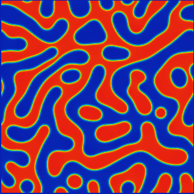

The research groups of the Applied Analysis section share a common scientific foundation rooted in partial differential equations and variational methods, with a strong interest in applications from the natural and biomedical sciences. Mathematical tools from functional analysis and measure theory play a central role across all groups. A unifying theme is the mathematical understanding of multiscale phenomena — the connection between detailed models and their effective description at larger scales — encompassing rigorous analysis of emergence, pattern formation, and collective behaviour. Die Forschungsgruppen der Sektion Angewandte Analysis teilen eine gemeinsame wissenschaftliche Grundlage, die in partiellen Differentialgleichungen und Variationsmethoden verwurzelt ist, mit einem starken Interesse an Anwendungen aus den Natur- und Biowissenschaften. Mathematische Werkzeuge der Funktionalanalysis und Maßtheorie spielen in allen Gruppen eine zentrale Rolle. Ein verbindendes Thema ist das mathematische Verständnis von Mehrskalen-Phänomenen — der Zusammenhang zwischen detaillierten Modellen und ihrer effektiven Beschreibung auf größeren Skalen — einschließlich der rigorosen Analyse von Emergenz, Musterbildung und kollektivem Verhalten.
Word size reflects how many groups share the theme — hover to see whichWortgröße zeigt, wie viele Gruppen das Thema teilen — bewegen Sie die Maus zum Erkunden

Calculus of Variations and PDEsVariationsrechnung und PDEs
Research focuses on variational problems and partial differential equations motivated by questions in materials science and fluid dynamics. Topics include the analysis of pattern formation, nonlocal interaction energies, free boundary problems, and the derivation of effective continuum models from microscopic descriptions. A recurring theme is the competition between local and nonlocal energy contributions that drives pattern formation across scales. Die Forschung konzentriert sich auf Variationsprobleme und partielle Differentialgleichungen, motiviert durch Fragen der Materialwissenschaften und Fluiddynamik. Themen umfassen die Analyse von Musterbildung, nichtlokalen Wechselwirkungsenergien, Freie-Rand-Problemen und die Herleitung effektiver Kontinuumsmodelle aus mikroskopischen Beschreibungen. Ein wiederkehrendes Thema ist das Zusammenspiel lokaler und nichtlokaler Energiebeiträge, das Musterbildung über verschiedene Skalen hinweg treibt.


Applied Geometric Analysis ↗Angewandte Geometrische Analysis ↗
The group studies geometric evolution equations and their connections to variational calculus and mathematical physics. Central themes include mean curvature flow and its sharp-interface limits, phase-field approximations for interfacial dynamics, and applications in materials science and data science. A key focus is the development of rigorous convergence theories bridging diffuse and sharp interface models. Die Gruppe untersucht geometrische Evolutionsgleichungen und deren Verbindungen zur Variationsrechnung und mathematischen Physik. Zentrale Themen sind der mittlere Krümmungsfluss und seine Scharfe-Interface-Grenzwerte, Phasenfeldnäherungen für Grenzflächendynamik sowie Anwendungen in der Materialwissenschaft und Datenwissenschaft. Ein Schwerpunkt liegt auf der Entwicklung rigoroser Konvergenztheorien, die diffuse und scharfe Grenzflächenmodelle verbinden.


Applied Analysis and Modelling in Biosciences ↗Angewandte Analysis und Modellierung in den Biowissenschaften ↗
Research combines rigorous mathematical analysis with biological and medical applications, developing and studying models for self-organisation, pattern formation, and structure formation in living systems. Topics range from reaction–diffusion–ODE systems describing stem cell dynamics and tissue growth to problems in developmental biology. The group maintains strong interdisciplinary connections to experimental biology and medicine. Die Forschung verbindet rigorose mathematische Analysis mit biologischen und medizinischen Anwendungen, indem Modelle für Selbstorganisation, Musterbildung und Strukturbildung in lebenden Systemen entwickelt und untersucht werden. Die Themen reichen von Reaktions-Diffusions-ODE-Systemen zur Beschreibung von Stammzelldynamik und Gewebewachstum bis hin zu Problemen der Entwicklungsbiologie. Die Gruppe pflegt enge interdisziplinäre Verbindungen zur Experimentalbiologie und Medizin.


Analysis and PDEsAnalysis und PDEs
Research interests span partial differential equations and their applications in the natural sciences, with particular interest in hyperbolic conservation laws, free boundary problems, and the mathematical modelling of biological and physical systems — including cell motility, fluid dynamics, and epidemic spread. Die Forschungsinteressen umfassen partielle Differentialgleichungen und ihre Anwendungen in den Naturwissenschaften, mit besonderem Schwerpunkt auf hyperbolischen Erhaltungsgleichungen, Freie-Rand-Problemen und der mathematischen Modellierung biologischer und physikalischer Systeme — einschließlich Zellmotilität, Fluiddynamik und Epidemieausbreitung.